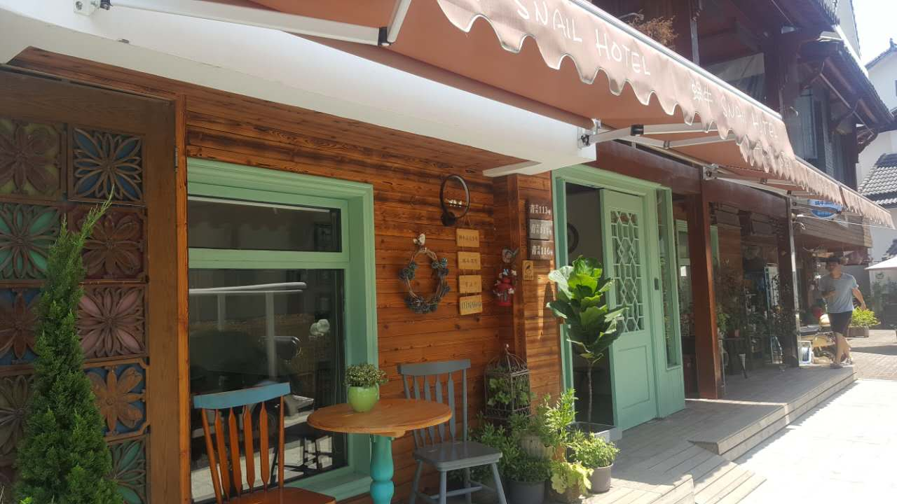
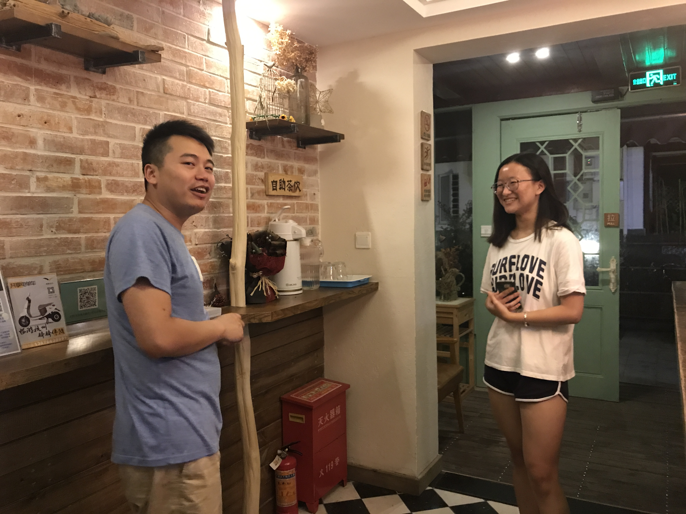

2017年7月23日这是我们民宿实地走访的第二天，清晨八点，小组的成员们早早准备完毕，开始了我们的第二站——蜗牛民宿。 蜗牛民宿在青芝坞的众多民宿中算是规模较大的一家，营业的短短三年时间里已经扩展到四栋之多，并在2016年进行了最新的一次装修改造。虽然有多达四栋的规模，但蜗牛民宿每栋的主题都是不同的，“那只蜗牛”以园艺花草为主题，除了别具特色的美式小花园，还有各色花草的装饰，甚至每间房间都以不同的花名命名；而另一栋“蜗牛后坞”则是以极简色彩为主题，用白墙与原木的主色调突出自然的美，房间的取名也变更与房间色调相符的水色、墨灰等。  团队成员对该民宿老板进行了细致的采访，了解到青芝坞的民宿店主基本都是以租赁的方式获得房源，经过一系列个性化装修，并获取相关行业证书后才能正式开始营业。青芝坞民宿的总体经营现状良好，一年里虽有三个月的淡季，但是优越的地理位置在很大程度上弥补了季节性对民宿运营的波动影响，同时较高的入住率和服务满意度是青芝坞民宿的特点之一。杭州市出台的推动共享经济、扶持民宿发展的政策得到了民宿店主们的肯定，他们认为这在一定范围内省去了繁琐的步骤、放宽了要求，办理卫生和消防许可证容易了很多，降低了民宿行业的起步门槛，极大促进了民宿行业的发展。  通过对店主的采访我们还了解到，青芝坞的民宿市场已经近乎饱和，随着近几年民宿产业的快速发展，运营成本大大提高（如房租连年增长等），较高的入住率也不能带来丰厚的收益。如果入驻青芝坞时机较晚，仅能赚取薄利，真正运营成功的只有早期几家拥有稳定的客源和较低的成本的民宿店主。 实际走访店主和入住民宿是最简单直接的调研，亲自采访和切身体会带给我们的不仅是一手的资料更是不可多得的珍贵经历。蜗牛民宿的店主热情周到，听闻我们的来意更是全力配合，大家慢慢坐下，在一杯茶的时光里娓娓道来。蜗牛的理念就是“慢下来”，放慢脚步享受生活，这是一种生活方式，也是传达给住客的一种人生情怀。共享民宿是一种绿色的住宿方式，这种对空闲资源利用、不闲置、不浪费的消费理念也体现在蜗牛民宿的点点滴滴，废旧的电灯泡做成的花瓶随处可见，干花做成了给客人的小礼物，一楼的民宿大厅里可以看见店主细心为住客准备的共享充电宝和共享雨伞，街道上整齐停放着共享单车和电动车，在这里我们看见了共享理念融入了青芝坞民宿，也真正融入了生活。